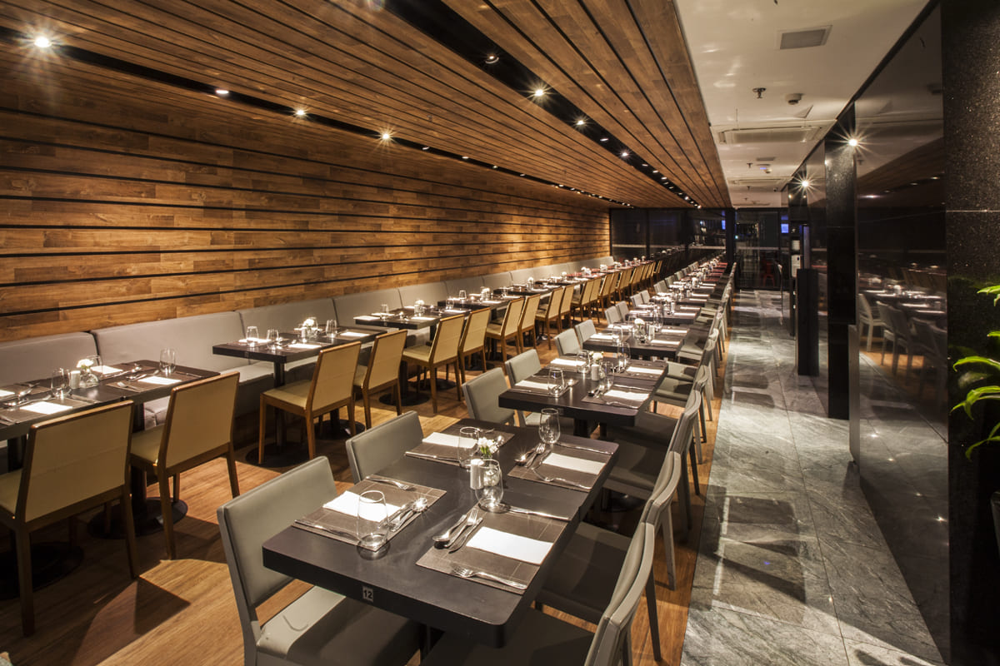

Padaria e restaurante funcional sem glúten, sem lácteos e sem conservantes com receitas saudáveis.
Pequeno ponto gastronômico serve refeições rápidas e quitutes sem leite, glúten, soja nem açúcar refinado.

Gastronomia sem glúten, destaque aos bolos red velvet, naked e ganache, clima simples e encomendas.